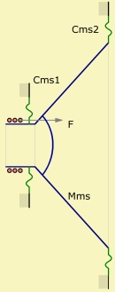

| Identifier | Kms= |
| Units | N/m |
| Format | Floating-point number |
| Purpose | Mechanic stiffness of suspensions |
| Used in | Def_Driver, Def_TwoCoilsDriver, Def_Speaker, Def_PiezoDriver, Diaphragm |
| See also | Mechanics of Driver, Cms= |

Kms is the total stiffness of all suspensions as used in the Standard Model of the Electro-Dyn-Model. The total stiffness is usually the sum of the stiffness of the outer suspension of the diaphragm, Kms2 and of the spider, Kms1.Kms = Kms1 + Kms2
For example
Def_Driver 'SP38'
Re=5.82ohm Le=2.9mH fre=1.1kHz ExpoRe=0.824 ExpoLe=0.756
BL=21Tm
Mms=70g Kms=12345.67N/m Rms=1Ns/m
The stiffness Kms is the inverse of the compliance, Cms=, which can be specified alternatively.
Kms = 1/Cms
For example
Def_Driver 'SP38'
Re=5.82ohm Le=2.9mH fre=1.1kHz ExpoRe=0.824 ExpoLe=0.756
BL=21Tm
Mms=70g Cms=81e-6m/N Rms=1Ns/m